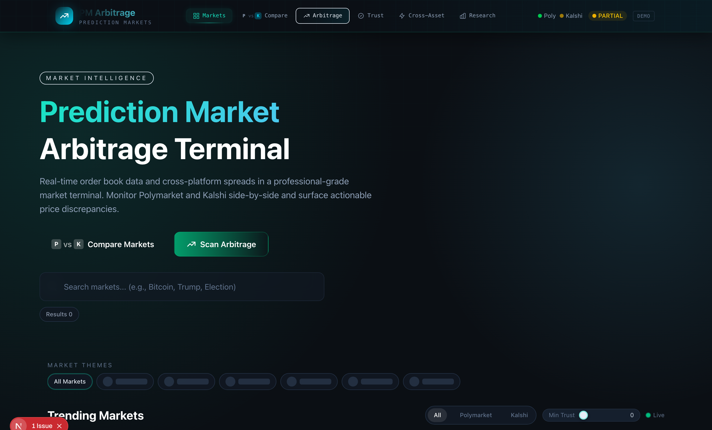

SURFACE 01 / 06 · MARKETS
Unified Polymarket + Kalshi list, streaming live the moment the app boots.

AUTO-CONNECT
Both WebSocket feeds open on app boot — no Go Live click required. Status pill in the navbar shows LIVE / PARTIAL / DEMO.
DEMO TOGGLE
One-click freeze of all prices for offline presentations. Pauses both WebSockets and the cross-asset polling loop.
FIRST FILTERS
Platform tab + minimum trust slider so you only see markets above the resolution-quality floor you set.